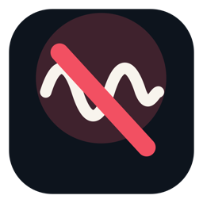

Live, not frozen
The mirror keeps updating at around 30 frames a second, so it is your real screen rather than a screenshot. Your own screen share is untouched.

For Windows & macOS
Someone is scribbling over your screen while you present. DrawingsGone gives you a live view of your own screen with the drawing layers filtered out, so you can keep reading and working. Nothing freezes, and your screen share keeps running.
Both builds are unsigned, so the first launch will warn you. How to get past it →
Windows SHA-256 4462d638dd543d8239f26c72d2849adfd09310010463780fe8f2ade13c003c7a
The mirror keeps updating at around 30 frames a second, so it is your real screen rather than a screenshot. Your own screen share is untouched.
The mirror window is marked excluded from capture
(WDA_EXCLUDEFROMCAPTURE on Windows, sharingType = .none
on macOS), so it never appears to anyone watching.
Filter the entire desktop, or drag out just the rectangle you need to keep an eye on. A one-pixel outline shows exactly where the filter sits.
One keystroke drops the filter for five seconds so you can see the annotations on purpose, then puts it back.
Windows has no equivalent of the macOS API that removes another app's full-screen overlay from a screen capture, so on Windows the annotation-free view comes from mirroring one window instead of the whole desktop. Three modes:
| Live · one window | The annotation-free mode. Pick the window you are sharing; it is captured on its own, underneath any drawings, and mirrored live in the same place on screen. |
|---|---|
| Live · screen area | A real-time copy of a rectangle of the desktop. Anything drawn over the screen still shows up here, because that is what the desktop actually looks like. |
| Solid cover | An opaque blanket over the area. Needs no capture at all, and is the fallback when a window refuses to be mirrored. |
There is also an experimental option that hides full-screen topmost overlay windows while the filter is on. It is off by default.
The macOS build is the original: a menu-bar app that captures the screen in real time and excludes high-layer overlay windows, which is how drawing tools such as Slick and conferencing annotations render. It needs Screen Recording permission (System Settings → Privacy & Security → Screen Recording); the solid cover mode needs no permission at all.
DrawingsGone.exe. It lives in the notification area; there is
no window to close.DrawingsGone.app into /Applications.xattr -dr com.apple.quarantine /Applications/DrawingsGone.app.Windows: a Win32 app, GDI capture, no runtime to install. macOS: Swift, ScreenCaptureKit. Both are tiny, have no telemetry, no network calls, no accounts, and no installer that writes anywhere except a couple of preference keys.